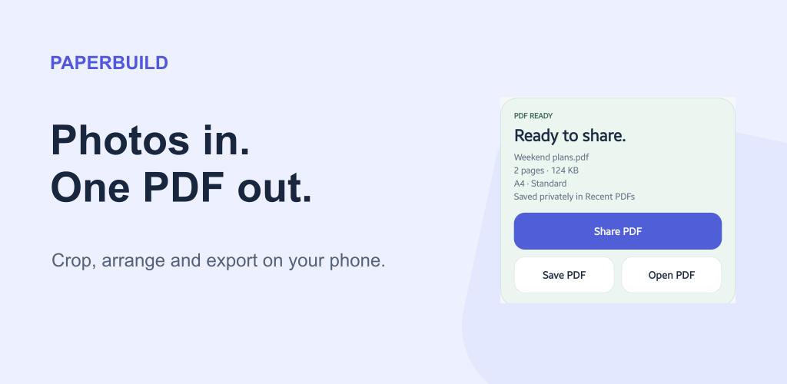
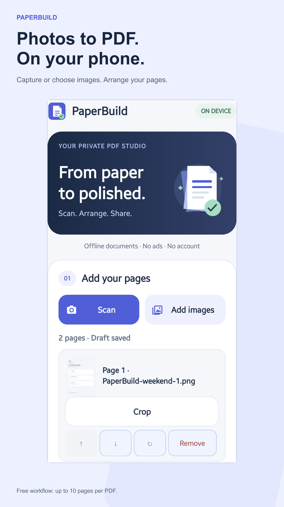
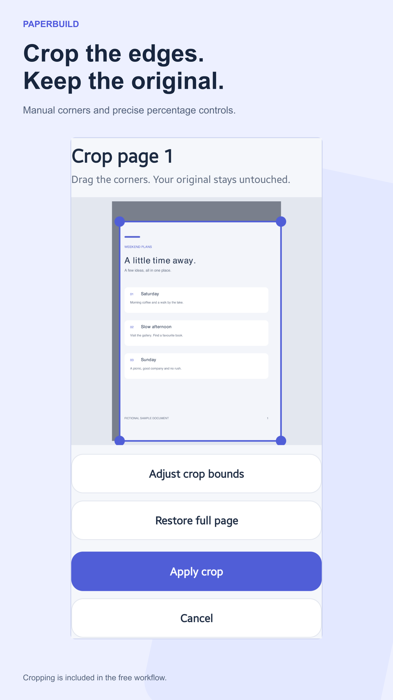
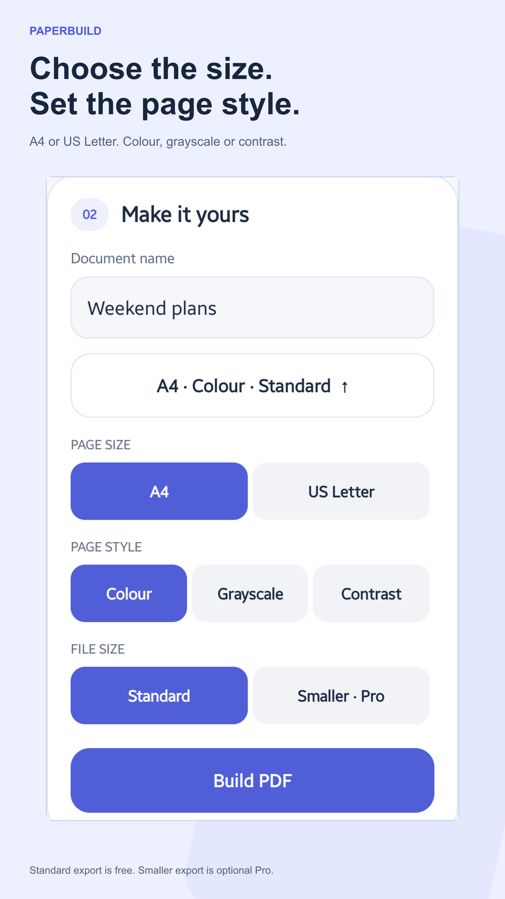
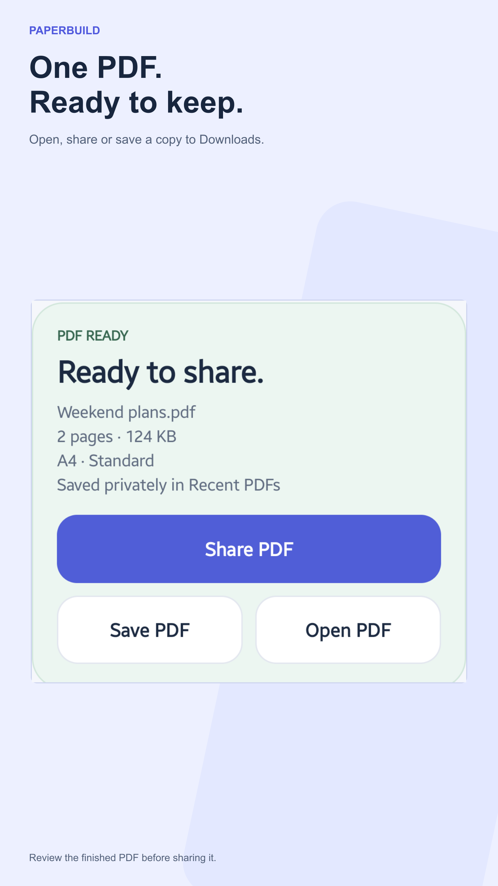
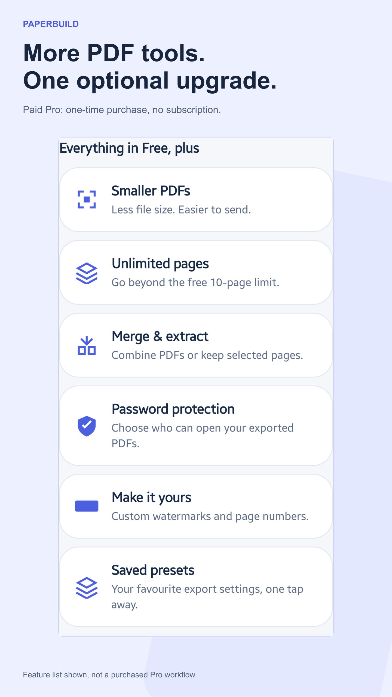
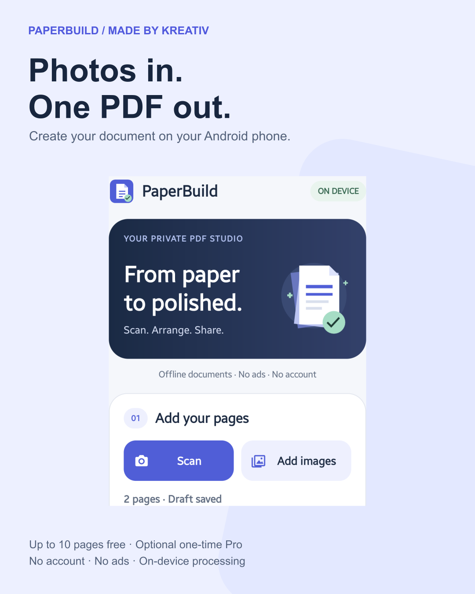
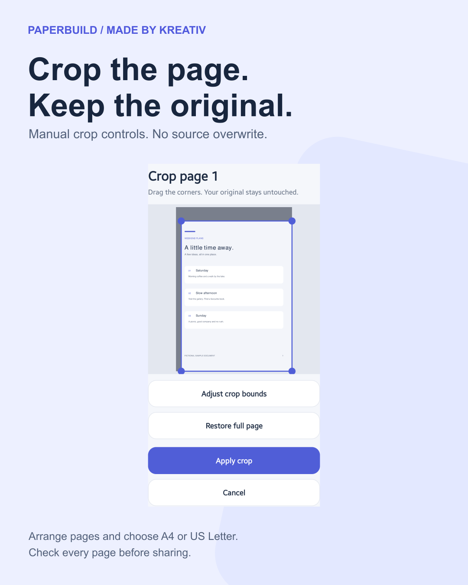
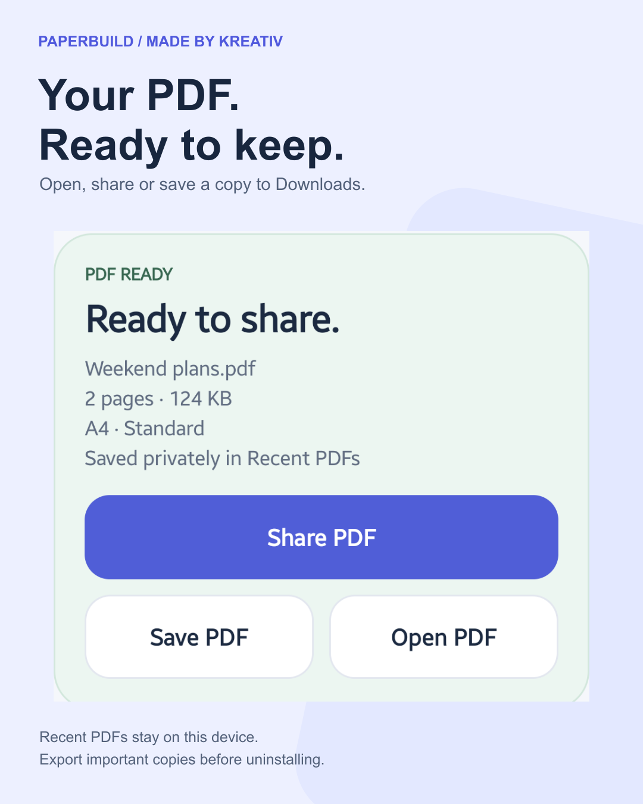

Made by Kreativ · Prepared 18 October 2026
PaperBuild marketing and listing review
Photos to PDF, processed on your phone. Built around the genuine released 1.1.0 interface.
Drafts only. Nothing uploaded, submitted, published or sent.
Real app captures, cropped and scaled without repainting the interface. Fictional sample documents. No AI marks baked into the visuals; no Console declarations changed. Pro benefits are not a demonstration of purchased tools.
Proposed store copy
Title 24/30 · Short 78/80 · Full 3064/4000 characters
PaperBuild: Photo to PDF
Photos to PDF offline, with cropping, page styles and an on-device PDF library
Turn photos into a PDF on your Android phone. PaperBuild lets you capture a page with your camera app or choose images, arrange them, crop the edges and export one document. Processing happens on your device, without an account or ads. FREE PHOTO TO PDF TOOLS - Add images with Android's system picker or open your camera app to capture a page - Build documents with up to 10 pages - Preview, reorder, rotate and remove pages - Crop manually without changing the original; restore the full page when needed - Choose A4 or US Letter and colour, grayscale or high-contrast page treatment - Resume your privately saved draft after closing the app - Open, share or save the finished PDF to Downloads/PaperBuild FIND YOUR RECENT PDFS Completed documents are saved in a private on-device library. Preview unprotected PDFs, rename them, open or share a copy, or save to Downloads. Move a document to Removed PDFs when you no longer need it; restore it or confirm permanent deletion later. Exported copies stay untouched. OPTIONAL PAPERBUILD PRO — ONE-TIME PURCHASE - Smaller PDF exports - More than the free 10-page limit - Merge PDFs or extract a page or page range - Password-protect exported PDFs - Add custom text watermarks and page numbers - Save named export presets; passwords are never saved Pro is a permanent unlock, not a subscription. Your local Google Play price is shown before purchase. Restore ownership using the same Google Play account. The photo-to-PDF workflow, cropping and Recent PDFs remain free. ON-DEVICE PROCESSING PaperBuild has no account, advertising, analytics, tracking or internet permission. It does not upload your images or documents. Google Play handles connectivity for purchases and ownership checks. Android's image picker and camera app let you choose the pages; PaperBuild does not request broad gallery access or direct camera permission. Android 8 and 9 may require storage permission when saving to Downloads. When you open or share a PDF, the receiving app handles that copy under its own privacy terms. Keep important copies outside PaperBuild before uninstalling: uninstalling removes the private draft and Recent PDFs library. Saved Downloads are not removed by the app. BEFORE YOU EXPORT This is an image-to-PDF maker, not OCR, automatic edge detection or a PDF text editor. Review page order, cropping and readability before sharing. Smaller exports and page treatments can change image quality. PDF merge and extraction retain page content and sizes rather than rasterising pages. Password-protected input PDFs are not supported; use an unlocked copy. Editing invalidates digital signatures; extracted PDFs discard bookmarks and page labels. Watermarks and page numbers are not redaction or digital signatures. Output passwords protect exported PDFs, not source images or draft working files. Passwords are not saved in drafts or presets, and forgotten passwords cannot be recovered. Privacy: https://github.com/aolaru/kreativ-mobile-apps/blob/main/paperbuild/PRIVACY_POLICY.md Support: info@madebykreativ.com
Feature graphic

Six phone screenshots in proposed order











Provenance and exact crop bounds
Three social graphics






Graphic 01 launch caption
A few photos. One PDF. Built on your phone. I built PaperBuild for Android to turn photographed pages into a document without creating an account or uploading the pages to a processing server. Choose images or capture a page, crop and arrange them, then export an A4 or US Letter PDF. The free workflow supports up to 10 pages and includes a private Recent PDFs library. Optional one-time Pro adds smaller exports, more pages, PDF merge and extraction, password-protected output and other export tools. No subscription. This is not OCR or automatic edge detection. Check every page before sharing, and save important copies outside the app before uninstalling. If you try it, tell me which step could be simpler. — Andrei, Made by Kreativ https://play.google.com/store/apps/details?id=com.kreativ.paperbuild&utm_source=launch_social&utm_medium=social&utm_campaign=paperbuild_photos_pdf_202610
All English and Romanian captions
Short screenshot tour
24 seconds, vertical and silent. App screenshots, not live footage or proof of a purchase.
Website tutorial and app page
PaperBuild is not yet in the website app directory or article app schema. The publication checklist covers those prerequisites; no website files were changed.
Unsent outreach
Droid Life
https://www.droid-life.com/contact/
Official app-tip contact form checked 18 October 2026. Unsent; editorial coverage is not promised.
Android app tip: PaperBuild photo-to-PDF maker with on-device processing Hello Droid Life team, I am Andrei, the developer of PaperBuild for Android. It turns captured or selected images into a PDF on the device, with no account, ads or document upload. The free workflow includes manual cropping, page ordering, A4/Letter export, page treatments and a private Recent PDFs library, with up to 10 pages per document. A one-time paid Pro unlock adds smaller exports, more pages, merge/extract and protected output. It is not OCR or automatic edge detection. If this fits an Android utility roundup, the public listing is below. I can provide the genuine screenshots and a short feature summary. This is an editorial tip, not a request for a favourable review or guaranteed coverage. Thank you, Andrei Made by Kreativ
Android Authority
https://www.androidauthority.com/contact/ — news@androidauthority.com
Official contact page checked 18 October 2026; lists news@androidauthority.com for news. Unsent editorial pitch.
App roundup candidate: PaperBuild offline photo-to-PDF workflow Hello Android Authority team, I am the developer of PaperBuild, a small Android document utility. It converts captured or selected images into PDFs locally, with manual crop controls, page styles and a private Recent PDFs library. The free workflow supports up to 10 pages, without an account or ads. Optional paid Pro is a one-time unlock, not a subscription, for smaller exports, more pages, merge/extract and password-protected output. The app does not offer OCR, automatic edge detection or PDF text editing. If it is relevant to an upcoming utility roundup, the public listing is below. I can supply real app screenshots. No coverage or favourable review is expected. Best, Andrei Made by Kreativ
Android utility roundup creator
Select a creator and verify their own current business-contact route before sending.
Reusable unsent draft. No individual recipient has been selected or verified.
PaperBuild for a practical Android utility roundup Hello, I build PaperBuild for Android: an on-device photo-to-PDF utility with manual cropping, page ordering, page styles and Recent PDFs. Its free workflow allows up to 10 pages; an optional one-time Pro unlock adds extra export and PDF tools. There is no account or advertising, and documents are not uploaded for processing. If this fits your audience, I can send real screenshots and an accurate Free/Pro summary. It is not OCR or an automatic scanner, and no positive review or placement is expected. Thanks, Andrei Made by Kreativ
Complete pitches and channel links
Next steps after approval
- Approve the title, listing copy and six-screen sequence.
- Save the approved listing assets and check the individual AI-label controls before submitting.
- Publish and verify the website tutorial before linking it from Play.
- Choose one existing social channel for graphic 01 and approve the post.
- Send only a selected editorial pitch, then compare actual listing traffic and acquisitions.